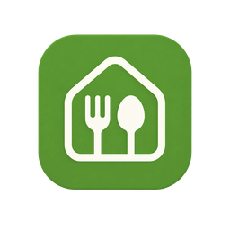
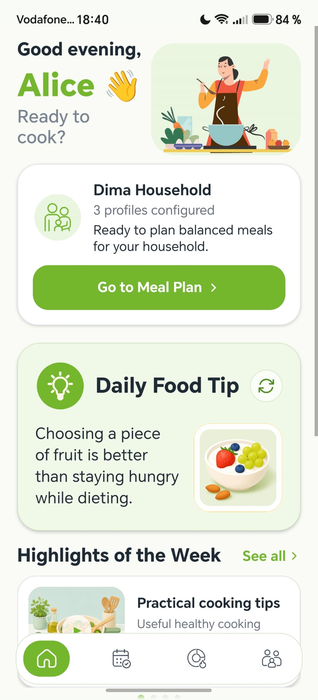
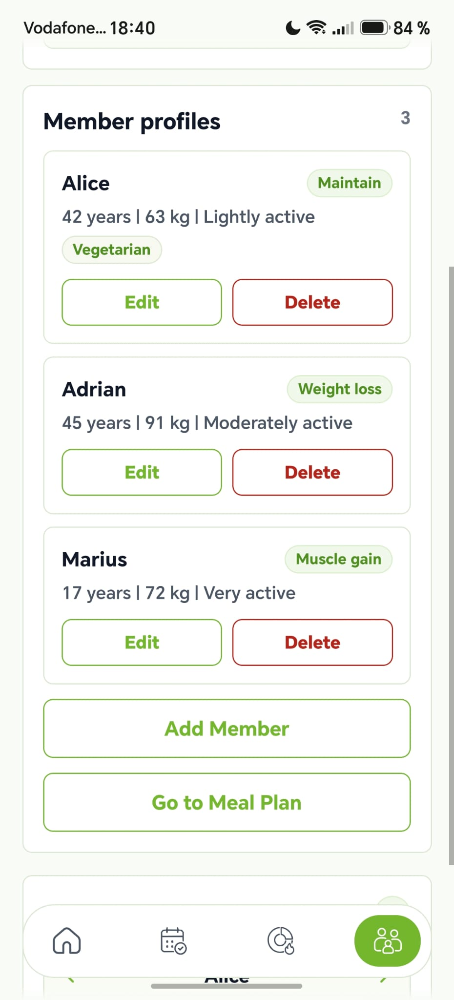
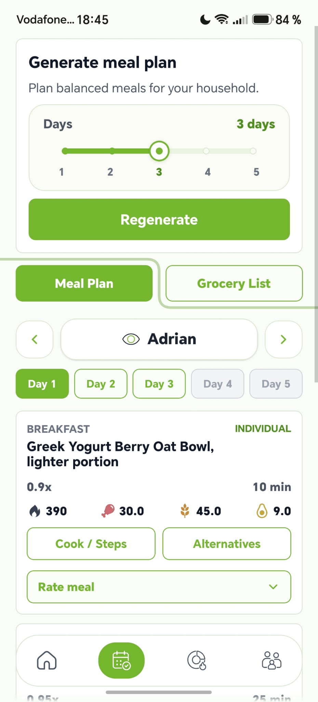
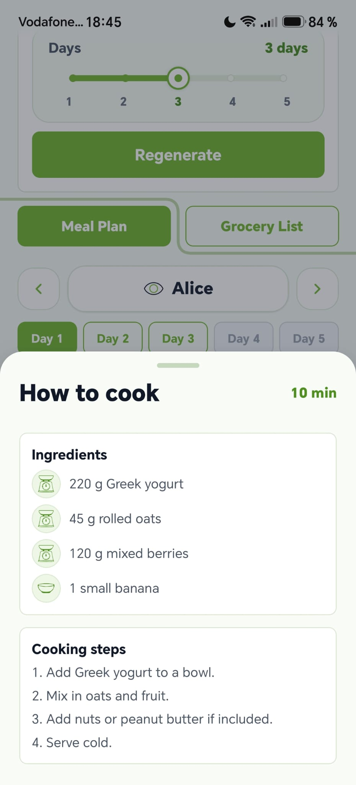
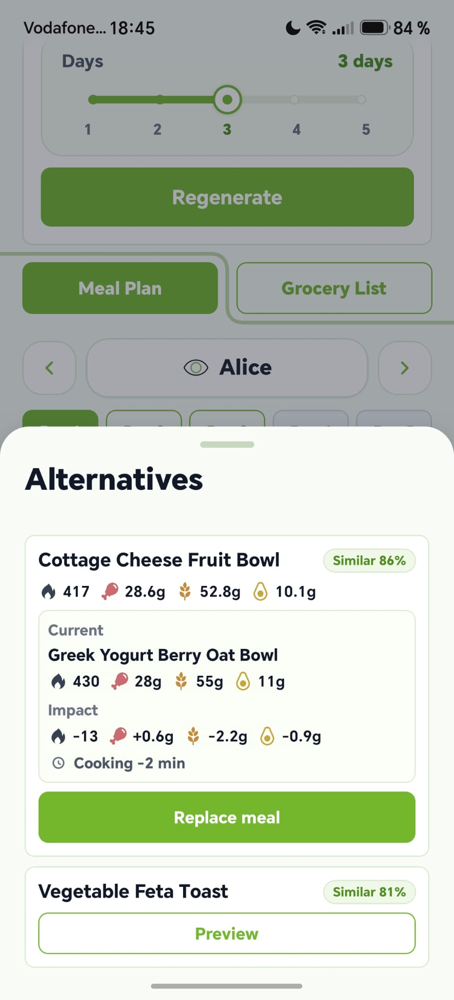
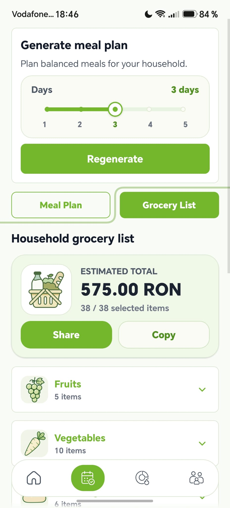
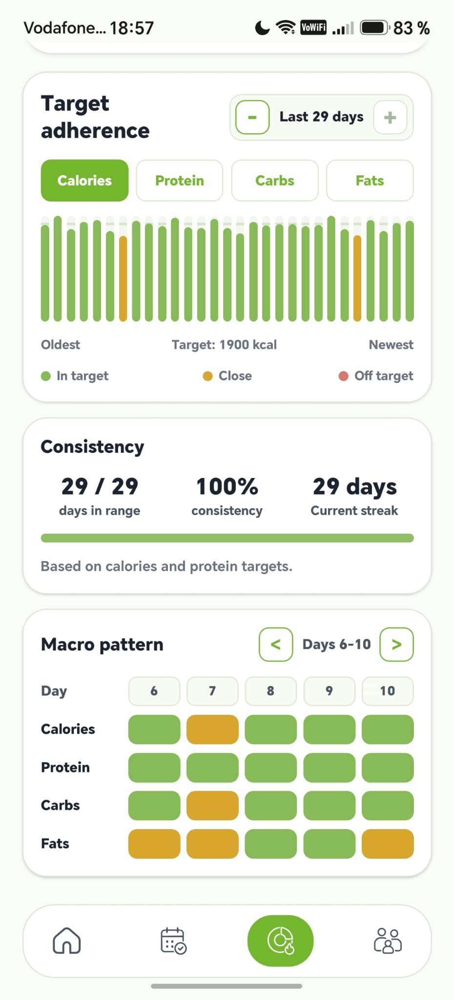

Set up the household
Add members, goals, preferences and dietary restrictions.

TableTogetherBachelor thesis · Portfolio project
TableTogether plans multi-day meals for a whole household, connecting member profiles to a recipe-based generator, then turning the result into recipes, grocery lists and progress insights.
Built on

Product story
Meal planning gets harder when several people share the same kitchen but have different goals, preferences and dietary restrictions. TableTogether brings those profiles into one planning flow instead of treating each person as a separate diet.
The result is a shared plan built from real recipes, with portions adapted per member and the practical pieces that follow: cooking details, alternatives, groceries and progress tracking.
Application flow
Add members, goals, preferences and dietary restrictions.
Profiles and nutrition targets are passed to the planning engine to build a multi-day recipe plan.
See macros, cooking time, scaled ingredients and step-by-step instructions.
Preview alternative recipes and their impact before replacing a meal.
Ingredients from the selected plan are aggregated into one practical shopping list.
Save completed days and follow nutrition trends over time.
Product demo
This 80-second walkthrough uses Dima Household, a predefined sample household with three different member profiles, to show how TableTogether coordinates goals, preferences and dietary needs inside one planning flow.
Maintain goal · vegetarian profile
Weight loss goal · no special restriction
Muscle gain goal · active teenager
Different profiles, one coordinated plan.
Profiles and planning
Each member keeps their own goals and preferences while still taking part in the same plan. Portions and meal views adapt to the selected profile without splitting the experience into separate planners.


Cooking steps and alternatives
Recipe views show scaled ingredient amounts and practical cooking steps for the generated portion. When a meal needs changing, alternatives are previewed first and applied through the backend only after validation.
Similar recipes are surfaced through a lightweight KNN-based retrieval layer, while the main planning engine remains deterministic and rule-based.


Groceries and progress
Selected recipe ingredients are combined into a categorized grocery list with purchase suggestions and estimated prices. Completed meals can then be saved as daily snapshots and reflected in the Insights view over time.


Technical architecture
TypeScript, React Native, Expo SDK 56, react-native-svg and local image assets.
Python, FastAPI, Uvicorn and SQLite for local accounts, sessions, plans and progress.
Deterministic recipe-based planning with slot filters, profile guards, scoring and groceries.
Curated CSV and JSON layers for canonical foods, recipes, ingredients and grocery references.
Project context
TableTogether was developed as an end-to-end Economic Informatics project combining mobile development, backend APIs, data processing and a custom meal-planning engine.
The current version is intentionally local-first and non-clinical, with curated datasets and estimated prices that keep the system reproducible without depending on commercial services.